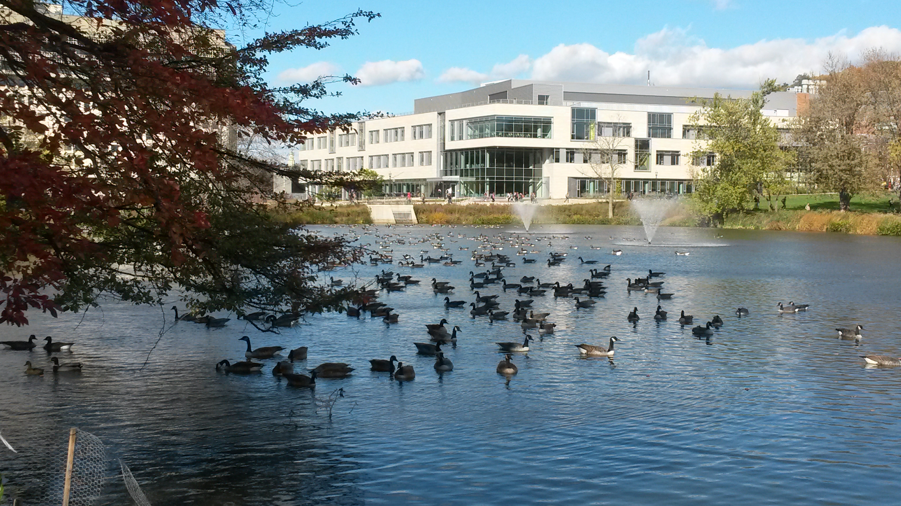

| Home | Publications | Ordering | For Authors | About |
GLSA is the Graduate Linguistic Student Association of the University of Massachusetts Amherst. We produce and sell publications in linguistics, including:
We are in the process of making older titles currently sold as PDFs available in an open access format. Older titles are available as PDF copies and can be ordered directly from the GLSA. Newer volumes are sold through Amazon, and titles are listed in this site with links to their pages on Amazon.com. Recent titles are directly linked below: |
|

Graduate Linguistic Student Association (GLSA) Department of Linguistics N408 Integrative Learning Center University of Massachusetts 650 North Pleasant Street Amherst, MA 01003-1100 U.S.A. Fax USA (413) 545-2792 glsa@linguist.umass.edu |
| © 2020 GLSA Publications |
Last Updated August 3, 2020 |